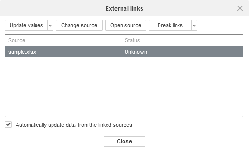
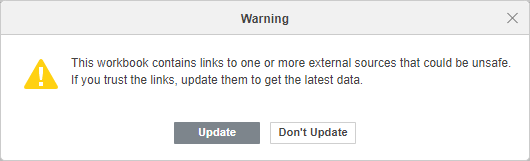

Dodavanje spoljnih linkova u ćelije
Dodavanje spoljnih linkova
U Spreadsheet Editor-u možete da kreirate spoljni link ka ćeliji ili opsegu ćelija u drugoj radnoj svesci. Spoljni linkovi ka ćelijama mogu se kreirati između fajlova unutar trenutnog portala (u online editoru) ili između lokalnih fajlova (u desktop editoru).
Napomena: u online editoru, mogućnost ubacivanja podataka putem spoljnog linka mora biti implementirana i na strani integratora (npr. u sistemu za upravljanje dokumentima treće strane).
Ako se podaci u izvornoj radnoj svesci promene, možete ažurirati vrednosti u odredišnoj radnoj svesci bez ponovnog ručnog kopiranja.
Da biste dodali spoljni link,
- otvorite izvornu radnu svesku i odredišnu radnu svesku,
- u izvornoj radnoj svesci kopirajte ćeliju ili opseg ćelija (Ctrl+C),
- u odredišnoj radnoj svesci nalepite kopirane podatke (Ctrl+V),
- kliknite na dugme Paste Special i izaberite opciju Paste link (ili koristite taster Ctrl da biste otvorili meni Paste Special, a zatim pritisnite N).
Link će biti dodat. Ako kliknete na ćeliju koja sadrži spoljni link, u traci sa formulama izgledaće ovako: ='[SourceWorkbook.xlsx]Sheet1'!A1.
Da biste ažurirali dodate spoljne linkove,
- pređite na karticu Data,
-
kliknite na dugme External Links,

- aktivirajte opciju Automatically update data from the linked sources da biste stalno održavali sve podatke ažurnim,
- da biste ažurirali određene vrednosti, izaberite ih i kliknite na dugme Update values.
Status će biti promenjen na „OK“.
U istom prozoru External links možete kliknuti na dugme Open source da biste otvorili izvornu radnu svesku; ili kliknuti na dugme Change source da biste promenili izvorni link.
Kada otvorite radnu svesku koja sadrži spoljne linkove, pojavljuje se upozorenje:

Kliknite na Update da biste ažurirali sve spoljne linkove.
Da biste prekinuli dodate spoljne linkove,
- pređite na karticu Data,
- kliknite na dugme External Links,
- izaberite željeni link sa liste,
- kliknite na dugme Break Links ili kliknite na strelicu pored njega i izaberite da li želite da Break links (trenutno izabrane) ili Break all links.
Linkovi će biti prekinuti i vrednosti se više neće ažurirati.
Dodavanje spoljnih podataka
Možete da se referencirate na podatke iz druge radne sveske. Da biste to uradili,
- otvorite izvornu radnu svesku i odredišnu radnu svesku,
- počnite sa unosom formule,
- kliknite levim tasterom miša na ćeliju na koju želite da se referencirate, u drugoj radnoj svesci.